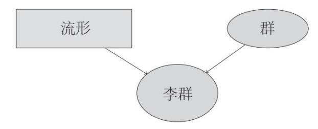
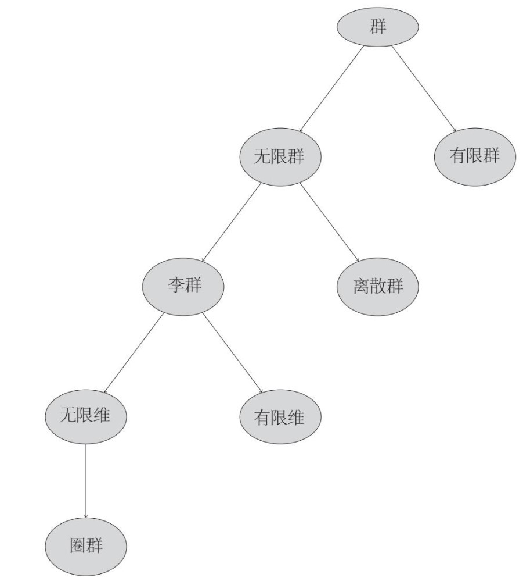
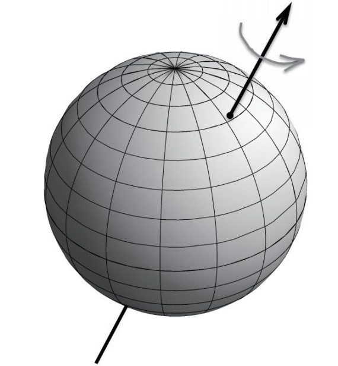
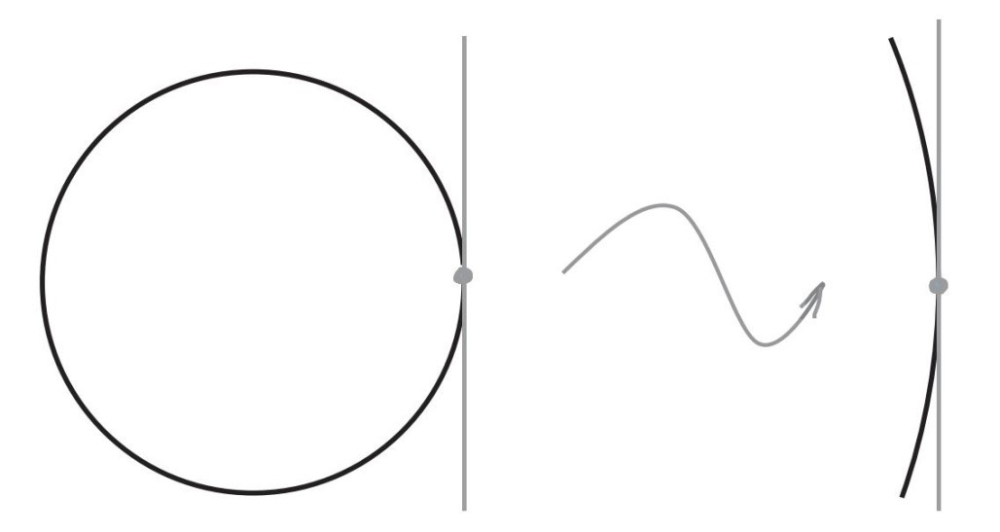
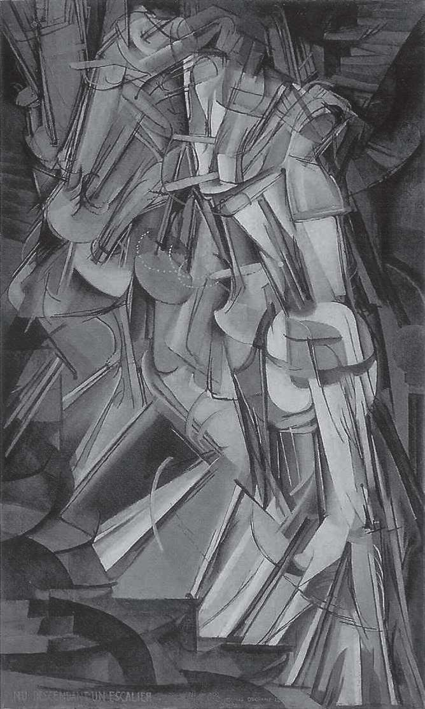
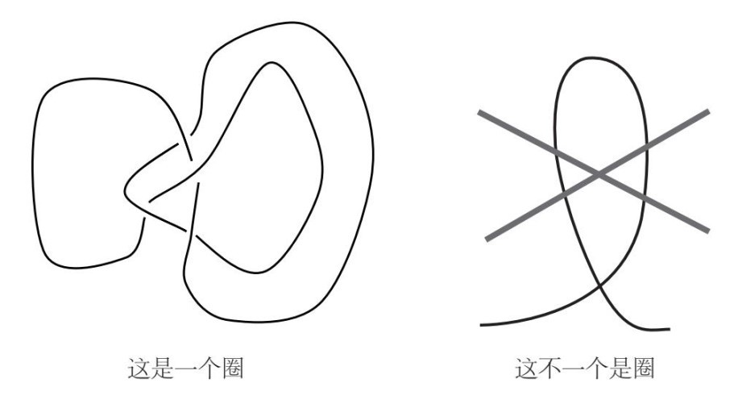
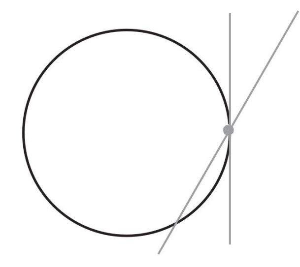

1986年秋季，我是莫斯科石油天然气学院的一名大三学生，当时，我已经完成并提交了关于辫群的那篇论文。富克斯问了我一个问题：“接下来你准备做什么呢？”
我想着手研究另一个问题。几年来，富克斯一直与他的一位学生，鲍里斯·费金，一起从事“李代数”（Lie algebras）表示研究。富克斯说这个领域颇具学术研究价值，有大量未解之谜，而且与量子物理关系紧密。
我自然对这个领域非常感兴趣。虽然在叶夫根尼·叶夫根尼耶维奇的引导下我已经“皈依”数学领域，但是自儿时起对物理学的痴迷依然没有减退。一想到数学和物理学可能会碰撞出火花，我就兴奋不已。
富克斯递给我一篇他和费金合写的研究论文。这篇论文很长，有80页。
“我本来准备给你一本介绍李代数的书，”他说，“不过，我转念一想，为什么不让你看看这篇论文呢？”
我把论文小心翼翼地放进背包。当时，这篇论文还没有公开发表。有幸阅读这篇论文的人屈指可数，费金后来还开玩笑说，我可能是唯一一个通篇阅读这篇论文的人。
论文是用英语写成的，他们俩计划把它发表在美国出版的一部论文集上。但是，由于出版商在运作该论文集时计划不周，最终导致出版时间延误了差不多15年。那时，论文涉及的大部分成果已经在其他地方出现过了，因此，没有多少人读过这篇论文。不过，该论文还是备受肯定，也为富克斯和费金赢得了应有的荣誉。这篇论文被广泛引用，人们甚至由此发明了一个新名词——“费金–富克斯表示”，指称富克斯和费金的李代数表示。
甫一开始阅读这篇论文，我就想到一个问题：“李代数”这个名字好奇怪啊，它是什么东西呢？富克斯在论文里假设读者已经具备相当多的知识，但是其中有很多内容我从未涉猎，因此我跑到书店，把所有关于李代数的教科书全买了下来。买不到的，我就去石油天然气学院的图书馆借阅。就这样，我一边阅读费金和富克斯的这篇论文，一边大量阅读与李代数相关的书籍。这一经历对我的学习风格产生了深远的影响，从此以后，我再也不满足于单一的知识来源，而是广泛搜集各类资料，然后如饥似渴地阅读。
* * *
为了让大家理解李代数的含义，我先要解释一下“李群”（Lie group）这个概念。这两个概念都是以挪威数学家索菲斯·李（Sophus Lie）的名字命名的。
动物世界里有各种动物，同样，数学王国中的各种数学概念也是层出不穷。这些概念彼此关联，形成族群和亚族群。两个不同的概念还经常结合，形成一个新概念。
群的概念就是一个典型的例子。群与鸟存在某种相似性，鸟构成动物世界中的一个类别（我们称之为鸟类）。鸟类可以分成23个目，每目可以进一步分成科，科又可以分成属。例如，非洲鱼鹰是隼形目鹰科海雕属（与这些名字相比，“李群”这个词看起来要简单得多）。同样，群也是数学概念中的一大门类，这个门类又包含着不同的“目”“科”“属”。
例如，元素个数有限的群可以被视为群这个门类下的一个目。我们在第2章讨论的方桌对称群仅包含4个元素，属于有限群。同样，通过将多项方程式的根添加到有理数中形成的数域，也是有限群（例如，当该多项方程式是二次方程式时，该群包含两个元素）。有限群这一目还可以进一步分成科，如伽罗瓦群。结晶体群是各种结晶体的对称群，也是有限群的一个科。
除有限群这个目以外，群这一门类还包含无限群这个目。例如，整数群是无限群，我们在第5章讨论的与数字n对应的辫群Bn（n=2，3，4，…）也是无限群（因为Bn是由包含n条线的辫子构成的，而这样的辫子有无数条）。圆桌旋转群是由圆上所有点构成的循环群，所以它也是无限群。
不过，整数群与循环群之间有一个重要的不同点。整数群是离散的，也就是说，该群中的元素无法相互结合形成任何自然意义上的连续的几何图形。我们不能通过连续的移动方式，而只能通过跳跃的方式，从一个整数到另一个整数。与之相反，我们可以在0度至360度之间连续地改变旋转角度。而且，这些角度可以相互结合形成一个几何图形——圆。数学界把这些几何图形称为“流形”（manifold）。
在数学王国，整数群和辫群均属于离散无限群这个科，循环群和李群则属于另一个科。简言之，李群中的元素是流形上的点。因此，李群是将群与流形这两个数学概念结合起来而形成的一个新概念。

下面这个树形图表示的是本章拟讨论的一些与群相关的概念（有的概念前文尚未涉及，本章将予以讨论）。

李群可以被用来描述自然界中存在的大量对称现象，因此它有非常重要的研究价值。例如，我们在第2章讨论的SU(3)群，就是一个李群。
我们再举一个李群的例子：球体的旋转群。圆桌的旋转操作由旋转的角度确定，但是，如果我们旋转的是一个球体，那么它旋转时的自由度更大。因此，我们必须按下图所示方法，不仅需要规定旋转的角度，还需要规定旋转轴——旋转轴可以是通过球心的任意直线。
球体的旋转群在数学上有一个专门的名称——“三维空间特殊正交群”，通常表示为SO(3)。我们可以把球体的对称操作看成该球体所在三维空间的变换操作。这些变换操作都是正交变换，即所有点的绝对距离保持不变。顺便说一句，这样的操作会得出SO(3)群的三维表示，我们在第2章讨论过这个概念。

同样，上文所说的圆桌旋转群叫作SO(2)群，其中的旋转操作是平面上的特殊正交变换，即二维变换。由此我们可以得到SO(2)群的二维表示。
SO(2)群和SO(3)群不仅是群，还是流形（即几何图形）。SO(2)群是圆，圆是流形，因此，SO(2)既是群又是流形，它还是李群。同样，SO(3)群中的元素是另一个流形上的点，不过这个特点我们不容易直接观察到。（注意，该流形不是球面。）我们在前面说过，球体的每次旋转都是由旋转轴和旋转角度确定的。现在，我们通过观察发现，球体上的每个点都可以产生一个旋转轴，即该点与球心的连线，而旋转角度只是圆上的一个点。因此，SO(3)群中的元素可以用球面上的一个点（由该点确定旋转轴）和圆上的一个点（由该点确定旋转角度）来共同确定。
我们在一开始时也许应该先讨论一个比较简单的问题：SO(3)的维数是多少？为了回答这个问题，我们需要更系统地讨论维数的含义。在第2章中我们说过，我们生活的这个世界是三维的。也就是说，当确定空间中某个点的位置时，我们需要规定三个数字或者（x，y，z）。同时我们还知道，平面是二维的，平面上的点用（x，y）就可以确定。直线是一维的，直线上的点只用一个数字就可以确定。
那么，圆的维数是多少呢？我们可能会很自然地认为圆是二维的，因为我们通常是在平面上画圆，而平面又是二维的。如果把圆上各点看作平面上的点，那么我们需要用二维坐标来描述该点。但是，在数学中，已知几何图形（如圆）的维数是指在该几何图形上准确地确定任意点的位置所需的坐标的个数，而与该几何体所在环境（如平面）的维数无关。圆还可以被放到三维空间中（比如人们手上戴的戒指），甚至维数更大的空间中。对于一个具体的圆，圆上任意点的位置可以用一个数字（即角度）来描述，这才是我们需要考虑的因素，它是圆上各点位置的唯一决定因素。因此，我们说圆是一维的。
当然，说到角度，我们必须在圆上挑选出与0度角对应的参考点。同样，为了将x赋值给直线上的各点，我们也需要确定与x=0相对应的参考点。在为给定物体创建坐标时，我们有很多方法。但是，这些坐标所包含的数字的个数都相同，这个数目就被称为该物体的维数。
请注意，随着我们的视线不断拉近，在研究圆上某一点的越来越小的邻域时，圆的曲率几乎可以被忽略。圆上某一点的极小邻域，与圆的切线上同一点的极小邻域几乎没有区别。圆的切线是切点附近与圆最相似的直线，这表明圆与直线的维数相同。

在我们把某个点放大后观察时，圆与切线之间的距离似乎越来越小。
同样，球面位于三维空间中，但其本身的维数是二。的确，球面有两个坐标数字：经度和纬度。这两个概念，常被我们用来确定地球表面（与球面形状接近）的点的位置，因此我们并不陌生。我们在上图中看到的球体表面的结合部位是由“平行面”与“回转面曲线”构成的，两者分别对应确定的纬度与经度。球面有两个坐标数字，这一事实说明球体是二维的。
那么李群SO(3)呢？SO(3)群中的每个点都是球面的一次旋转操作，因此它有三个坐标数字：旋转轴（由旋转轴在球面穿过的具体点来确定）有两个坐标数字，旋转角度则是第三个坐标数字。因此，SO(3)群的维数为三。
如果李群（或其他任意流形）的维数超过三，情况就会非常复杂。我们的大脑只能想象维数不超过三的几何图形，即流形。想象四维空间，对于我们来说是一项艰巨的任务：我们无法把时间（第四维度）理解成与空间维度相同的另一个维度。维数更高时会是什么情形呢？我们能分析五维、六维、甚至一百维的流形吗？
我们可以采用类比的方法来理解这类情况。艺术品用二维的方式去表现三维物体。画家在画布上画出目标物体的二维投影，然后用透视法在画作中制造纵深感（第三维）。同样，我们也可以通过分析四维物体的三维投影，来想象这些四维物体。
在想象四维物体时，我们还可以采用另外一种更有效的方法，即把四维物体想象成三维“切片”的组合。这个方法与把面包切成片比较相似。面包是三维的，但是，如果我们把面包片切得非常薄，我们就可以把这些切片看作二维的。
如果第四维度代表时间，那么四维“切片”就是一组组的照片。的确，如果给正在运动中的人拍照，得到的就是四维物体的一个三维切片（随后该切片被投影到平面上），表现出这个人在四维空间中的情况。连续拍摄几张照片，就会得到一组这样的三维切片。如果我们在眼前快速翻动这些照片，就能看到人或物体运动的情况。显而易见，这就是拍摄电影的基本原理。
我们也可以利用照片并置的方式，创造出某种人运动的感觉。20世纪初，艺术家们对这个想法兴趣甚浓，他们利用照片并置，在画作中加入了第四维度，使图片产生了动感。这方面的里程碑式作品之一是马塞尔·杜尚（Marcel Duchamp）于1912年创作的《下楼梯的裸体女人，第2号》。

有意思的是，爱因斯坦在同一时期提出了相对论，证明空间和时间不可分割。该理论将四维时空的概念推至物理学的前沿。与此同时，亨利·庞加莱（Henri Poincaré）等数学家正在深入钻研高维几何的奥秘，并逐步超越了欧几里得的几何学范畴。
杜尚不仅痴迷于非欧几里得几何学，而且对第四维的概念兴趣浓厚。茹弗雷（E. P. Jouffret）在他的著作《四维几何学基础性论文集与n维几何学导论》（Elementary Treatise on Four-Dimensional Geometry and Introduction to the Geometry of n Dimensions）中，详细地介绍了庞加莱的这一开创性理念。杜尚在阅读该著作时，写下了这样的笔记：
四维图案可以留下三维阴影（参见茹弗雷，《四维几何学基础性论文集与n维几何学导论》，第186页，最后三行）……与建筑师绘制楼房设计方案的方法类似，四维图案可以通过三维截面的形式（逐楼层）表示。借助第四维度，不同楼层可结合起来形成楼房的整体结构。
艺术史学家琳达·亨德森（Linda Dalrymple Henderson）认为：“新的几何学对那些长期以来广受认可的大量‘真理’提出了质疑，杜尚从中受到启发，形成了一些妙不可言的颠覆性观点。”她指出，杜尚与其同时代的艺术家对第四维度的浓厚兴趣，是催生抽象艺术的基本因素之一。
由此可见，是数学帮助艺术找到了创新的突破口。艺术家借助数学知识，看到了隐蔽性极高的新维度，他们深受启发，以摄人心魄的美学形式，表现出现实世界中蕴含的深邃真理。他们创作的现代艺术作品有助于深化我们对现实的感知，影响我们的集体意识，这又对数学界产生了推动作用。自然科学界的哲学家杰拉尔德·霍尔顿（Gerald Holton），对这种推动作用的描述颇有说服力：
文化的活力之源就在于不同文化领域的碰撞。碰撞时会产生炼金效应：各种成分融合在一起，淬炼成文化中一颗颗新的宝石。我认为，庞加莱与杜尚对这个问题的看法是一致的。尽管这两个人涉足的领域不同，但毫无疑问，他们在两人都感兴趣的多维空间中发生了这种碰撞。
数学可以帮助我们理解几何学中的所有变化、图形和表现形式。数学是一门通用语言，适用于所有维度的空间，无论我们能否想象出其中的各种物体。同时，数学还能帮助我们超越直观想象的极限。查尔斯·达尔文（Charles Darwin）说得好：数学赋予了我们“新的感官”。
比如，尽管我们无法直接想象四维空间，但是我们可以通过数学的方式实现。我们只需把四维空间中的点表示成四维数组（x，y，z，t）即可，就像我们用三维数组（x，y，z）表示三维空间中的点一样。同理，我们可以把n维平坦空间（n为任意自然数）中的点表示成n维数组（我们在第2章讨论了数据表中的行，对n维空间中点的分析与之相似）。
或许，我应该先解释一下强调“平坦空间”的原因。直线很明显是平坦的，平面同样如此。但是，我们可能很难想象一个平坦的三维空间。（注意：我们在这里讨论的是三维空间本身，而不是三维空间中的各种弯曲的流形。）其实，原因很简单，那就是三维空间没有曲率。在数学上曲率的精确定义比较深奥（该定义由黎曼曲面的创始人波恩哈德·黎曼给出），且与我们当前的目标关系不大，因此我们略去不谈。我们只需要知道三维空间中有三个无限延伸、彼此垂直的坐标轴，就能很好地理解三维空间的平坦性。同理，n维空间中有n个相互垂直的坐标轴，不存在曲率，因此它也是平坦的。
多少个世纪以来，物理学家一直以为我们生存的空间是一个平坦的三维空间。但是，我们在序言中说过，爱因斯坦在广义相对论中指出，万有引力会使空间变弯（曲率非常小，以至于我们在日常生活中注意不到，但是，曲率确实存在）。因此，我们生存的空间实际上是一个弯曲的三维流形。
此时，我们难免会产生疑问：弯曲的空间如何能独立存在，而不像球面存在于一个平坦的三维空间中那样，存在于一个更多维的平坦空间里呢？这是因为我们习惯于认为我们生存的空间是平坦的，因此，根据我们的常识，弯曲的形状似乎只会存在于我们所处的平坦空间之中。但是，这种理解是不正确的，是由我们对现实的狭隘认知造成的。数学可以帮助我们跳出这个认知陷阱。黎曼指出，弯曲空间是客观存在的，是自我形成的产物，并不需要平坦空间去盛放它们。我们在定义这样的空间时，需要完成的任务就是，确定该空间中任意两点间距离的测量规则（这个规则必须满足某些自然属性），数学界把这个规则称作“度量”（metric）。数学领域的度量概念与黎曼提出的曲率张量是爱因斯坦广义相对论的基础。
弯曲的形状，或流形，其维数可以是非常大的任意数字。我们讨论过，圆是平面上与某个定点距离相等的所有点的集合。同理，球面是三维空间中与某个定点距离相等的所有点的集合。现在，我们可以把球体的高维类比对象（有人称之为“超球体”）定义为n维空间中与某个定点距离相等的所有点的集合。该定义在该空间的n个坐标轴上都设置了一个限制条件，所以该n维空间中的超球体是（n–1）维物体。此外，我们还可以研究该超球体旋转操作的李群，记作SO（n）。
从数学当中群的分类这个角度来看，李群这一科可以分成两个属，即有限维的李群[如循环群和SO(3)] 和无限维的李群。请注意，所有有限维的李群一定是无限群，因为群中包含着无穷多的元素。例如，循环群含有无穷多的元素（即圆上的所有点），但是，所有元素只用一个坐标轴就能描述，所以循环群是一维群。对于无限维的李群，我们在描述群中元素时需要无穷多的坐标轴。这种“双重无限性”真的很难想象，但是，这样的群确实存在，因此我们需要认真研究它们。接下来，我以圈群为例，为大家描述无限维的李群。
为了让大家理解圈群这个概念，我们先考虑三维空间中的圈。简单地说，圈就是一个闭合曲线，如下图中的左边图形所示。我们在讨论辫群时，就已经遇到过圈（当时，我们称之为“纽结”）了。这里，我要强调一点：非闭合曲线（如下图中的右边图形所示）不是我们要考虑的圈。

我们也可以用类似的方法，去思考任意流形M上的圈（即闭合曲线）。这个圈围起来的空间叫作M的圈空间。
在第17章中将详细讨论这些圈在“弦论”（string theory）中的重要作用。传统的量子物理学的基本研究对象是电子、夸克等基本粒子。这些基本粒子呈点状，无内部结构，也就是说，其维数为零。弦论假定自然界中的基本研究对象都是一维的弦。一条闭弦就是位于流形M上的一个圈，因此，圈空间是弦论的基础。
接下来，我们来看一下李群SO(3)的圈空间。该空间的构成元素是SO(3)中的圈，我们仔细研究其中的一个圈。首先，该圈与上图所示的圈非常相似。不过，SO(3)是三维的，所以在它极小时，它是一个三维的平坦空间。其次，该圈上的任意点都是SO(3)的元素，即球体的旋转操作。因此，该圈的含义非常复杂：它是球体旋转操作的单参数集合。如果已知有两个这样的圈，我们就可以把它们对应的球体旋转操作加以结合，从而得出第三个圈。因此，SO(3)的圈空间可以形成群，我们把这个群称作SO(3)的圈群。圈群具有无限维李群的典型特征：我们无法利用有限个坐标数字描述该群的元素。
其他李群[如超球体旋转操作李群SO（n）]的圈群也是无限维李群，这些圈群在弦论中是作为对称群出现的。
* * *
费金和富克斯合著的这篇论文涉及的第二个概念是李代数。从某些方面来看，每个李代数就是已知李群的简化体。
“李代数”这个术语肯定容易引起误解。当我们听到“代数”这个词时，总会想起中学时学习的那些内容，例如对二次方程式求解。但是，这里的“代数”却拥有不同的内涵：它是名词“李代数”不可分割的一部分，指具有特定属性的数学对象。李群构成群这个类别下的一个科，但是，“李代数”表示的这些对象却构不成代数这个类别下的一个科，尽管这个词本身会给我们这样的暗示。不过，术语的真正内涵与字面意思的不一致性并无伤大雅，我们只要理解和接受就可以了。
要解释李代数，我先要告诉大家“切空间”（tangent space）的概念。当然，我不会文不切题地去讨论切线，而会用叫作“线性化”的微积分概念，即用线性（或者平坦）的形状去近似表示弯曲的形状。
例如，圆上一点的切空间是经过该点的一条直线，是通过该点的所有直线中与圆最贴近的一条。如下图所示，切线只在该点与圆接触，而其他直线还会从圆上的另外一点穿过。

同样，对于任意曲线（即一维流形），切线都可以在已知点附近接近该曲线。1637年，勒内·笛卡儿在他的专著《几何原本》（Géométrie）中描述了一种计算这些切线的有效方法。他在书中写道：“我敢说，在我知道的所有几何问题中，这个问题最普遍，意义最显著，也一直是我渴望了解的。”同样，对于球体，我们可以通过切平面，在某个已知点接近该球体。以棒球为例，我们把棒球放到地上，棒球与地面的接触点只有一个。此时，地面就是该点的切平面。对于一个n维流形，我们也有可能通过一个n维的平坦空间，在某个已知点接近该n维流形。
所有李群上都存在一个特殊的点，即该李群的恒等元。我们找出在该点与该李群相切的空间，这就是该李群的李代数！所以，李代数就像李群的小妹妹一样，每个李群都有自己的李代数。
比如，循环群是一个李群，该群的恒等元就是圆上那个对应0度角的点，而通过该点的切线就是该循环群的李代数。遗憾的是，我们无法用图来表示SO(3)群和它的切空间，因为两者都是三维的。但是，描述切空间的数学理论对于所有维数都适用。如果我们希望了解其原理，我们可以用一维或二维的图形（如圆或球面）作为模型加以想象。这样，我们就可以借助维数较低的流形，去理解更复杂、维数更高的流形。但是，即便这项工作也是多余的，因为我们可以完全借助数学语言，超越直观的限制。在数学上，n维李群的李代数是一个n维平坦空间，它被称作“向量空间”。
此外，李群的乘法运算会衍生出其李代数的一个运算：我们可以用李代数中的任意两个元素结合形成第三个元素。这种运算的特性比李群的乘法运算更难描述，目前我们无须掌握。如果大家学过矢量运算，就会知道三维空间中的向量积运算。看到此类运算，大家可能会觉得它的属性很奇怪。但你可能没有意识到，这类运算的结果实际上是要把三维空间变成一个李代数！
研究发现，向量积运算得到的结果实际上是李群SO(3)的李代数。因此，看上去颇为神秘的向量积运算实际上来源于球体旋转操作的结合律。
大家可能会问，既然李代数的运算如此奇怪，我们为什么还要关注李代数，而不继续研究李群呢？主要原因在于，李群通常是弯曲的（如圆），而李代数通常是平坦的（如直线、平面等），因此相比之下，研究李代数要容易得多。
我们以圈群的李代数为例。我们把圈群的李代数看成圈群的简化体，并以两位数学家的名字把它命名为“卡茨–穆迪代数”（Kac-Moody algebra）。这两位数学家分别是维克多·卡茨（Victor Kac，出生于俄罗斯，后移民至美国，现为麻省理工学院教授），以及罗伯特·穆迪（Robert Moody，生于英国，后移民至加拿大，现为阿尔伯塔大学教授），他们从1968年开始独立研究这些李代数。从那以后，卡茨–穆迪代数成为最受关注、发展最为迅猛的数学理论之一。
* * *
富克斯向我建议，在接下来的研究中，我就以这些卡茨–穆迪代数作为研究课题。但是，我在开始这方面的研究之后，却发现自己掌握的相关知识太贫乏了，就连具体的研究方向也无法确定。不过，我对它的兴趣丝毫没有减少。
富克斯住在莫斯科东北部，他家附近有一个火车站，这个火车站有列车开往我的家乡。那时，我每个周五都会回家度周末，于是富克斯建议我每周五下午五点先去他家，和他面谈，然后再回家。通常，我们会一起探讨问题，时间长达三个小时（期间，他会给我准备晚饭），然后我会乘坐最后一班列车，大概在半夜的时候赶回家。在1986年秋天和1987年春天这两个学期中，我们每周都会见一次面。这段经历在我学习数学知识的过程中起到了极为重要的作用。
1987年1月，我终于读完了费金和富克斯合著的那篇论文，可以着手开展研究工作了。当时，我拿到了莫斯科自然科学图书馆的借阅证。那里有大量的专著和期刊，有的是俄语版（很多俄语资料在石油天然气学院的图书馆也有收藏），还有的则是用其他语言撰写的。因此，我经常跑到那里，大量阅读数学书刊，搜寻介绍卡茨–穆迪代数以及相关内容的论文。
与此同时，由于量子物理对我有极大的吸引力，我还如饥似渴地钻研了卡茨–穆迪代数在量子物理方面的应用情况。我在前面说过，卡茨–穆迪代数是弦论中的重要内容。其实，卡茨–穆迪代数还可以被用来描述二维量子物理学模型的对称操作。我们生活在一个三维空间中，因此描述这个空间的模型也应该是三维的。再加上时间维度，我们就可以得到四个维度。但是通过数学方法，我们可以自由地为三维以外的其他世界建模，并分析和研究这些模型。维数低于三的模型相对简单，我们成功的可能性相对较高。通过知识积累，我们就可以进一步构建并分析更复杂的三维和四维模型。
我们研究不同维数的模型，可能不是为了将研究结果直接应用于我们这个物理世界，而是为了分享、借鉴这些逼真模型的某些显著特征。实际上，后者才是数理物理学的主要理念。
在这些低维模型当中，有的也可以应用于现实世界。例如，一块非常薄的金属板可以看作二维系统，因此用二维模型去描述它可以取得较好的效果。“伊辛模型”（Ising model）就是一个典型的例子，它描述的是二维网格节点处相互作用的粒子。拉斯·昂萨格（Lars Onsager）提出的伊幸模型解法具有极高的学术价值，可以帮助人们深入了解自发磁化现象，即铁磁性。昂萨格计算法的核心是该模型的一个隐性对称性，这个事实再次说明，对称性在理解物理系统方面具有举足轻重的作用。随后的研究表明，该对称操作可以用所谓的“维拉宿代数”进行描述。维拉宿代数好比卡茨–穆迪代数的“堂兄弟”，费金与富克斯在他们合著的那篇论文中，讨论的主要内容就是维拉宿代数。在这类模型中，有很多都可以借助卡茨–穆迪代数来准确地描述其对称操作。因此，卡茨–穆迪代数理论是理解这些模型的一个重要工具。
* * *
石油天然气学院的图书馆订阅了《参考文献杂志》（Journal of References）。这份月刊言简意赅地对新近的以各种语言发表的论文进行评论，并把这些论文按学科分门别类地整理好，还为每篇论文撰写了一个简短的摘要。我定期阅读这份杂志，事实证明，这是一个价值极高的资料来源。该杂志每月会出一期数学论文专刊，我总是认真阅读相关版面，从中寻找自己感兴趣的内容。如果我发现某篇论文可能对我有用，我就会记录下来，下一次去莫斯科自然科学图书馆时就借阅它。就这样，我收集了大量有价值的资料。
有一天，当我正在翻阅《参考文献杂志》时，意外地看到对日本数学家胁本实（Minoru Wakimoto）的一篇论文的评论。胁本实的原论文发表在《数理物理学通信》（Communications in Mathematical Physics）上，这是我一直密切关注的一本杂志。评论涉及的内容不多，但是论文题目中提到了与球体旋转群SO(3)有关的卡茨–穆迪代数，于是我记下了这篇论文的出处。下一次去自然科学图书馆时，我借阅了这篇论文。
在这篇论文中，作者针对与SO(3)群相关的卡茨–穆迪代数，别出心裁地提出了一个新颖的实现方式。这里，我用量子物理学的语言说明其要点（因为卡茨–穆迪代数可以描述量子物理模型的对称性）。用于描述基本粒子相互作用的逼真量子模型非常复杂，但是，我们可以将其简化，构建理想化的“自由场模型”，该模型中没有或几乎没有基本粒子的相互作用。这些模型中的量子场是名副其实地处于“自由”状态，彼此间没有发生任何作用。在这样的自由场模型中，我们经常可以实现复杂的也更有价值的研究。因此，我们可以解构复杂模型，完成本来可能无法完成的计算工作。这样的实现方式往往非常有效。不过，对于以卡茨–穆迪代数表示对称操作的量子模型而言，在已知的自由场实现范例中可供选择的范围仍然十分狭窄。
在阅读胁本实的这篇论文时，我立刻意识到他的研究成果可以为我们提供有效的自由场的实现方式，并有助于我们研究与SO(3)有关的最简单的卡茨–穆迪代数。我清楚这个研究成果的重要意义，同时，一些疑问也相伴而来：这种实现方式从何而来？可以将它推广到其他的卡茨–穆迪代数中吗？我意识到，这些问题是比较适合我的研究课题。
大家能想象，当我看到这个令人陶醉的研究成果，以及意识到它的潜在价值时的那种无比激动的心情吗？这种感受就好比在历经千辛万苦的长途跋涉之后，巍峨挺拔的山峰突然映入眼帘。此时此刻，那震撼人心的美令人目瞪口呆，以至于你情不自禁地大叫一声：“哇！”在这一刻，你觉得醍醐灌顶、茅塞顿开。虽然你还没有到达顶峰，你还不知道前方有哪些艰难险阻，但是，登顶的吸引力令你无法抗拒，你甚至已经在想象自己站上巅峰时的感觉。顶峰就在那儿，等着你去征服。问题在于：你是否有足够的力量以及足够的毅力去实现目标？